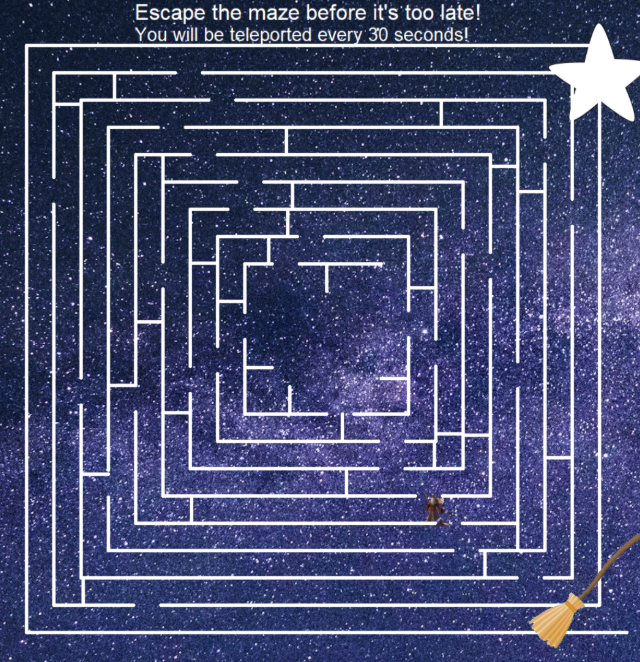
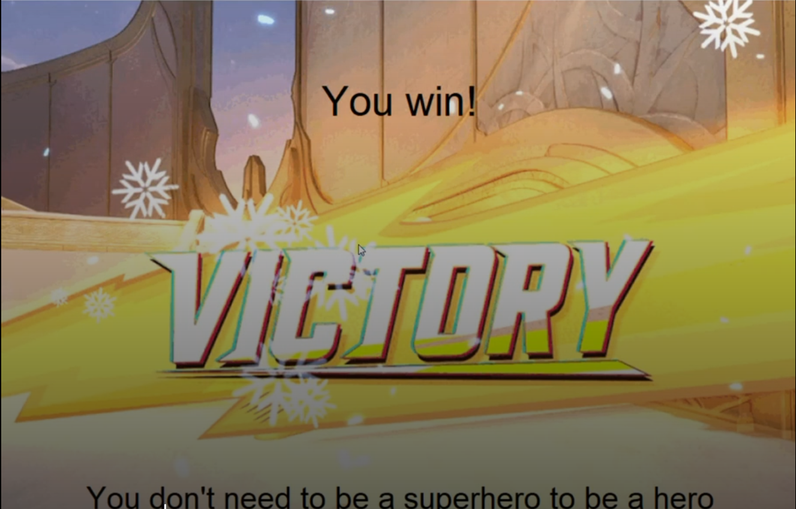
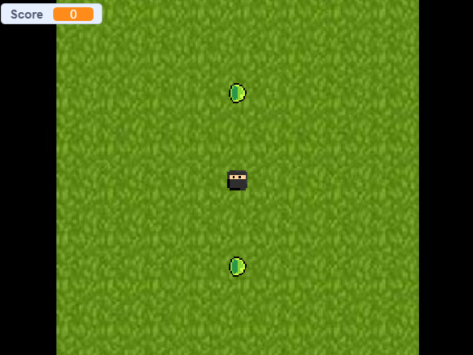
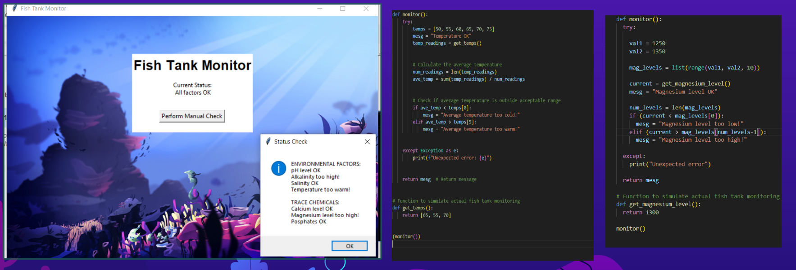
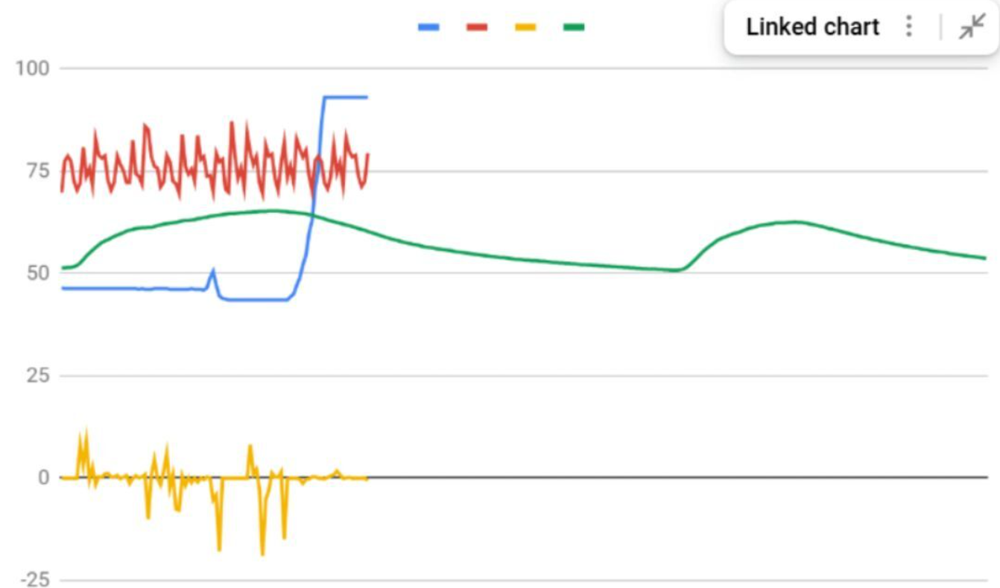
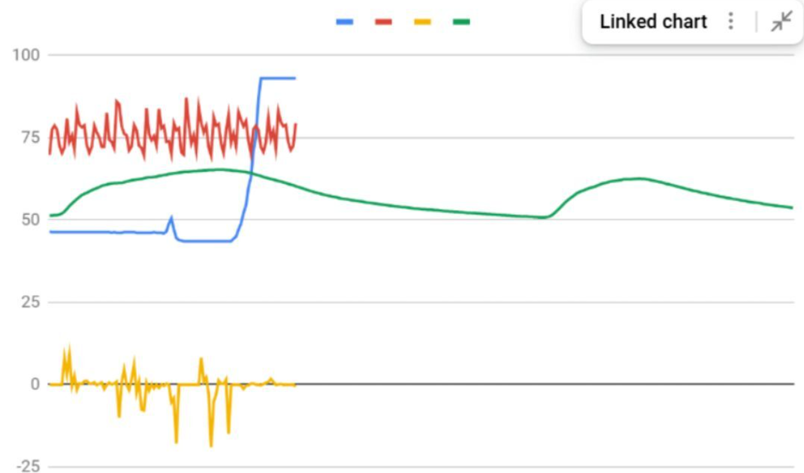

Home
Portfolio
About Me
My Portfolio

This is my game called make your own Acai Bowl. In this game you will be able to
make your own acai bowl with our customization options. These options include a wide
variety of fruits, protein options and at the end topping to top it off. The turtle
takes in your input and asks you the quantity and then proceeds to draw the required
ingredients.

This is my second game called the Teleport Maze Escape where you are a wizard
trying to escape the galaxy you were put into but you will be teleported in 30 seconds.

This is our spiderman postcard where you defeat spiderman villains, once you defeat them, spiderman
comes down crawling from a victory screen and drops an inspirational quote, while there is spiderman music.
We did this so we can send it the childrens hospital.

This is our scratch project where we built it so that there is a ninja that is trying to avoid and defeat the enemies which are slimes
with his swords that he uses. This code was easier to construct than python because we could physically see what each codes function was
rather than us figuring out which code is right to put in there.

We debugged the code so errors can be fixed
 

Based on our analysis, we believe the rover collected data from the Rocky Mountain region, as high noise levels
and interrupted light reflections caused by cloud cover aligned with patters we observed in comparison graphs, with light
data ultimately distinguishing it from the desert plains.